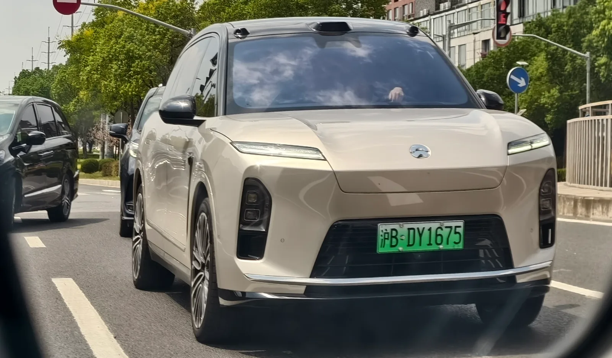
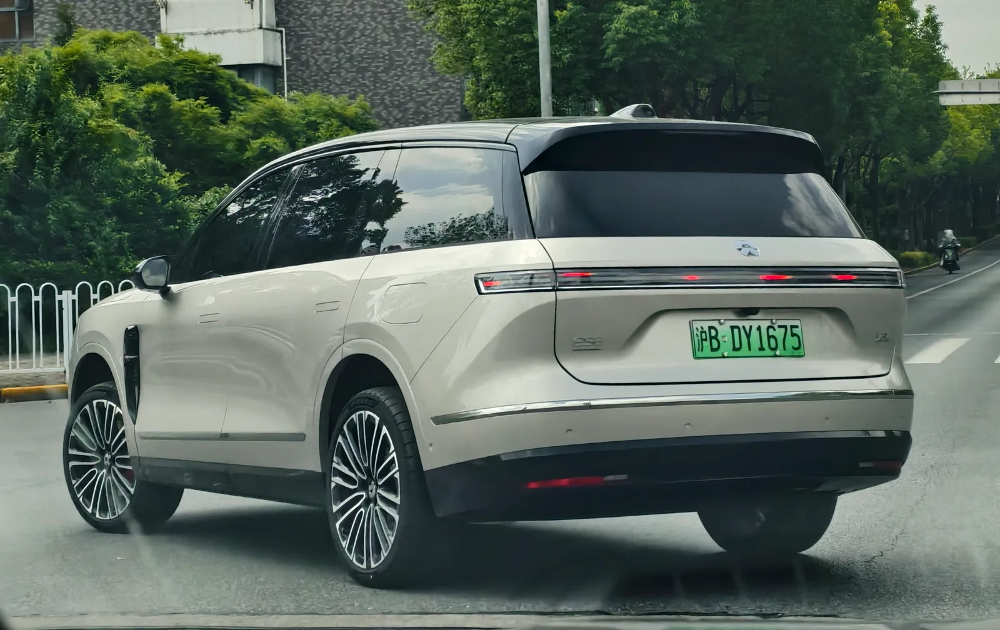

▲ 니오 3세대 ES8. 2026년 8월 21일 청두모터쇼에서 누적 인도 14만 대를 돌파했다 ⓒ Wikimedia Commons (CC0)
니오의 대형 전기 SUV 3세대 ES8이 2026년 8월 21일, 청두모터쇼 현장에서 누적 인도 14만 대를 돌파했다. 공교롭게도 이날은 이 차가 처음 출시된 지 정확히 1년이 되는 날이었다.
1. 청두에서 채운 14만 번째 인도

▲ 니오 3세대 ES8. 도로 위 주행 모습 ⓒ Wikimedia Commons (CC0)
니오는 2026년 청두모터쇼(8월 21일 개막)에서 3세대 ES8의 14만 번째 인도 행사를 진행했다. 니오 입장에서는 단순한 판매 이정표를 넘어, 출시 1주년을 상징적으로 자축하는 자리이기도 했다.
2. 가속도가 붙는 판매 — 30일 만에 1만 대

▲ 니오 3세대 ES8 후면. 최근 1만 대 인도가 약 30일 만에 이뤄질 정도로 판매 속도가 빨라졌다 ⓒ Wikimedia Commons (CC0)
흥미로운 지점은 판매 속도의 변화다. 출시 후 10만 대를 채우는 데는 약 7개월이 걸렸지만, 이후 13만 대에서 14만 대로 넘어가는 마지막 1만 대는 약 30일 만에 채워졌다. 초기보다 후반부로 갈수록 판매 속도가 오히려 빨라지고 있다는 뜻으로, 니오 내부에서는 15만 대 돌파도 머지않았다는 관측이 나온다.
3. ES8의 포지셔닝 — 6·7인승 플래그십

▲ 니오 3세대 ES8. 6·7인승 구성이 가능한 대형 플래그십 SUV로, BaaS 적용 시 진입 가격이 낮아진다 ⓒ 니오
3세대 ES8은 니오 라인업에서 가장 큰 SUV로, 6인승 또는 7인승 구성을 선택할 수 있다. 배터리를 별도 구독 방식으로 이용하는 BaaS(Battery as a Service)를 적용하면 초기 구매 가격을 낮출 수 있어, 진입 가격은 4만 1,200달러대까지 내려간다. 이런 가격 유연성이 판매 속도를 뒷받침하는 요인 중 하나로 꼽힌다.
4. 니오 전체 라인업 속 ES8의 위치
니오는 ES8 외에도 세단형 플래그십 ET9, 소형 브랜드 파이어플라이 등 여러 라인업을 동시에 운영하고 있다. 그중에서도 ES8은 가장 대중적인 대형 SUV 수요를 흡수하는 볼륨 모델 역할을 맡고 있으며, 이번 14만 대 돌파는 니오의 전체 판매 실적에서도 상당한 비중을 차지한다.
5. 정리
체크포인트
- 니오 3세대 ES8이 출시 1년 만에 누적 인도 14만 대를 돌파했다.
- 10만 대까지는 7개월이 걸렸지만, 최근 1만 대는 30일 만에 채워졌다.
- 6·7인승 구성과 BaaS 구독형 배터리로 가격 유연성을 확보했다.
- 판매 가속이 이어질 경우 15만 대 돌파도 임박했다는 전망이 나온다.